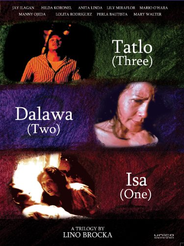
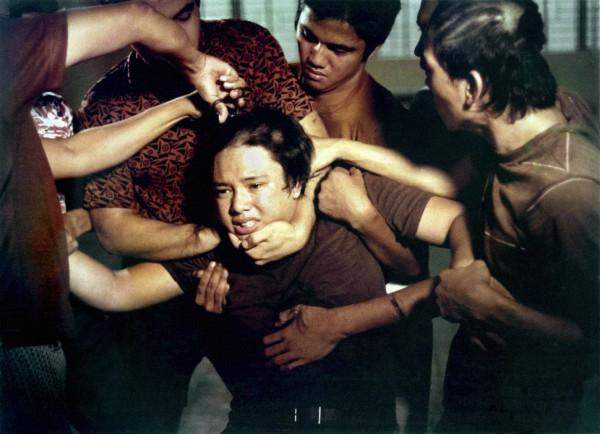
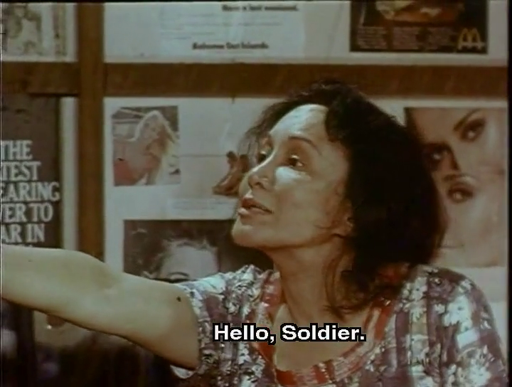
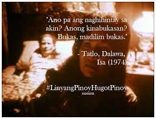

Tatlo, dalawa, isa
"Tatlo, Dalawa, Isa" ay isang koleksyon ng tatlong masalimuot na kwento na ginawa ng legendaryong direktor ng Pelikulang Pilipino
na si Lino Brocka. Ipinaaabot ng mga pelikula ang pagtibay ng pag-asa kahit na mayroong damdaming pagkadismaya.Kasama dito ang
kwento ng isang adik sa droga, isang iniwanang anak, at isang na-repress na Katoliko.
Ang galing ng kilalang direktor na si Lino Brocka ay maliwanag sa bawat isa sa mga dramatikong yaman na kasama sa antolohiyang ito.
Tatlong magkakaibang kwento tungkol sa mga tao na, sa iba't ibang paraan, naghahanap ng paraan upang makatakas sa mga buhay na
kanilang naging piitan.
Sa unang bahagi, "Mga Hugis sa Pag-Asa," sinusundan natin ang isang batang adik sa droga, si Noni, habang bumabangon mula sa
isang drug rehabilitation program at sinusubukan ding maunawaan ang mga isyu tungkol sa kanyang pinagmulan. Sa pangalawang
pelikula, "Hello, Soldier," inilahad ang kwento ni Gina, isang anak ng sundalo na naghahanap ng pagkakataon na makipagtagpo
sa kanyang Amerikanong ama, na umaasang dadalhin siya palayo mula sa kawalan ng kalinisan ng mga pabahay kung saan siya nakatira,
kahit na ito ay nangangahulugang iiwanan niya ang kanyang inang tunay. Ang huli ngunit hindi ang pinakabawat kwento, "Bukas,
Madilim. Bukas," ay ukol sa mga frustrasyon ni Rosalinda, isang mabuting Katolikong anak na naglaan ng kanyang buhay at pangarap
para alagaan ang kanyang mapangahas at maysakit na ina.

Jay Ilagan ... Noni (segment "Mga Hugis ng Pag-asa")
Perla Bautista ... Noni's Mother (segment "Mga Hugis ng Pag-asa")
Laurice Guillen ... Expediter (segment "Mga Hugis ng Pag-asa")
Soxy Topacio ... Popoy (segment "Mga Hugis ng Pag-asa") (as Socrates Topacio)
Roger Mariscal ... Roger (segment "Mga Hugis ng Pag-asa")
Rolly Papasin ... Carlos (segment "Mga Hugis ng Pag-asa")
Pio De Castro III ... Expediter (segment "Mga Hugis ng Pag-asa")
Jojo Abella ... Jerry (segment "Mga Hugis ng Pag-asa")
Bembol Roco ... Rocky (segment "Mga Hugis ng Pag-asa")
Nanding Josef ... Nanding (segment "Mga Hugis ng Pag-asa") (as Fernando Josef)
Rudy Hermano ... Rudy (segment "Mga Hugis ng Pag-asa")
Moey Chuidian ... Moey (segment "Mga Hugis ng Pag-asa")
Mark Migallos ... Mark (segment "Mga Hugis ng Pag-asa")
Martin Bautista ... (segment "Mga Hugis ng Pag-asa")
Lito Tiongson ... DARE Officer (segment "Mga Hugis ng Pag-asa")
Norma Mapua ... (segment "Mga Hugis ng Pag-asa")
Priscilla Castro ... (segment "Mga Hugis ng Pag-asa")
The Bahay-Pagasa Residents ... (segment "Mga Hugis ng Pag-asa")
Hilda Koronel ... Gina (segment "Hello, Soldier")
Anita Linda ... Lucia (segment "Hello, Soldier")
Bey Vito ... Rudy (segment "Hello, Soldier") (as Rey Vito)
Claude Wilson ... Tom (segment "Hello, Soldier") (as Claude Wilson)
Barbara Browne ... Betty (segment "Hello, Soldier")
Mely Mallari ... Gadang (segment "Hello, Soldier")
Estrella Kuenzler ... Shirley (segment "Hello, Soldier")
Melvi Pacubas ... Gwendolyn (segment "Hello, Soldier")
Dante Balois ... Marcing (segment "Hello, Soldier")
Edwin O'Hara ... William (segment "Hello, Soldier")
The PETA Kalinangan Ensemble ... (segment "Hello, Soldier") (as The Peta Martial Arts Division)
Lolita Rodriguez ... Rosenda (segment "Bukas, Madilim, Bukas")
Mario O'Hara ... Miguelito (segment "Bukas, Madilim, Bukas")
Mary Walter ... Atang (segment "Bukas, Madilim, Bukas")
Lily Miraflor ... Feliza (segment "Bukas, Madilim, Bukas")
Manny Ojeda ... Roberto (segment "Bukas, Madilim, Bukas")
Tatlong magkakaibang kwento tungkol sa mga tao na, sa iba't ibang paraan, naghahanap ng paraan upang makatakas sa mga buhay na kanilang naging piitan. Ang una ay tungkol sa isang adik sa droga sa rehab, sa pangalawa, isang anak ng sundalo ang naghahanap ng pagkakataon na makipagtagpo sa kanyang Amerikanong ama, at ang panghuli ay ang kwento ng isang mabuting Katolikong anak na naglaan ng kanyang buhay para alagaan ang kanyang maysakit na ina.
Isang dialectic tension sa pagitan ng agadang henerasyon ang gumagana sa pelikulang ito na binubuo ng tatlong kwento. Tatlong di-konektadong kwento na nagpapakita ng magkakaibang ngunit inaasahang mga resulta, na nagtatampok sa hilig ni direktor Lino Brocka para sa maayos at balangkas na mga pagtatapos. Trabaho ni Brocka ang direktor ng tatlong segment, na ginawa ang proyektong ito matapos ang tagumpay ng kanyang pinuri-praise na obra maestra, ang Tinimbang Ka Ngunit Kulang, na inilabas noong parehong taon.

Sa "Mga Hugis ng Pag-asa," dinaanan ni Noni ang masalimuot na hirap ng rehabilitasyon sa isang sentro para sa mga nagbabagong-buhay mula sa droga. Habang tumatalima ito sa mga pamilyar at pampamilyang problema ni Noni at ang kanyang sumunod na paglubog sa paggamit ng droga, ipinapakita ng pelikula ang halos di-makatao, halos dudoso na mga paraan na ginagamit ng sentro upang baguhin ang mga problemadong buhay. May sapat na pagmumura at sigaw — at, sa isang tiyak na sukat, ang paglaya — upang maalala ang hindi kapani-paniwala na mga pamamaraan ni Arthur Janov at ang mga eksena ng sadistikong rehabilitasyon sa A Clockwork Orange.
Ang unang kwento ay tungkol sa adiksyon sa droga at ang paglalakbay patungo sa paghilom na naka-set sa isang kontrobersiyal na sentro ng rehabilitasyon na may kakaibang mga paraan ng paggamot. Mataas na singil at makakaharap, may maraming sigawan, ngunit mayroong maraming kaamuan sa ilalim at tunay na pag-aalaga para sa mga tauhan nito.

Ang ikalawang bahagi sa triptych na ito ay "Hello, Soldier," isang makatawag-pansin na kuwento na naglalarawan ng buhay ng isang ina at isang anak sa mga lunsod ng Manila at ang pagbabalik ng dating kasintahan ng ina na isang Amerikanong sundalo. Taon 1963, 17 taon matapos silang huling maghiwalay sa dulo ng Ikalawang Digmaang Pandaigdig, at ang kanyang pagbabalik ay layuning opisyal na itataguyod ang kanyang pagsusukli kay Gina (Hilda Koronel), ang kanilang anak. Si Gina ay handang nagpapakita ng interes na maging anak, nananaginip ng lahat ng bagay na Amerikano — ang kanyang kwarto ay puro mga larawan ng Americana — at umaasang makalabas sa buhay na kahirapan. Sa araw ng kanyang pagbisita, kasama ang kanyang Amerikanang asawa, pumili si Lucia, ang ina ni Gina, na malasing para sa unang beses. Ang malinaw at malakas na timplado ng kolonyalistang nag-iwan ng pangalan — at ang mga multo ng neo-kolonyalismo — ay nangyayari dito, lalo na sa nakalasing at mabisang pangungumpit ng kalupitan ni Lucia laban sa Amerikano (isang magaling na pagganap ni Anita Linda).
Ang ikalawang kwento ay isang melodramang sosyal na realista. Ito ay si Brocka sa kanyang yugto, at ito ang pinakamahusay sa tatlo. Isang pagsusuri sa buhay sa lunsod, ang impluwensiyang Amerikano sa mga Pilipino, at ang hikaw ng American Dream.

Sa huling bahagi ng omnibus na ito, "Bukas, Madilim, Bukas," sinusubok ang mga limitasyon ng pag-aalay ng sarili sa pamamagitan ng matriarkal na tiraniya sa isang matandang pamilyang Espanyol. Si Atang (na ginampanan ng may tamang dami ng kahigpitan ni Mary Walter), ang tila'y lumpo ngunit malakas na matriarka, ay naghahari sa kanyang tahanan nang may bakal na kamay. Ang kanyang despotikong kontrol sa kanyang tahanan ay nagdudulot na ang kanyang anak na si Rosenda (na ginampanan nang mahusay na may conflicted nuance ni Lolita Rodriguez) ay ialay ang kanyang buhay sa pangangalaga sa kanyang ina. Wala ni isang katulong, lalo na ang alinman sa labas, ang inaasahan maliban kung aprubado ito ng matanda. Pumapasok si Miguelito (Mario O'Hara), ang hardinero, isang tila walang malisya na kabataan mula sa probinsya na nakipagkaibigan kay Rosenda at bumukas sa kanyang sekswalidad. Ang naratibong ito ay bumabaligtad sa dinamika ng pamilya tulad ng nangyayari sa "Szerelem" ni Karoly Makk (Love) at nagbibigay ng mga hinto sa mga noirish na elemento ng kasalanan at pang-uuto.
Ang ikatlong kwento ay tila si Brocka na sinusubukan ang kanyang galing sa gothic drama. Isang kuwento ng mga isyu sa loob ng pamilya, manipulasyon/pananakop ng mga magulang, at pagpigil sa sekswalidad. May magandang daloy ito na may totoong magandang gothic na atmospera.